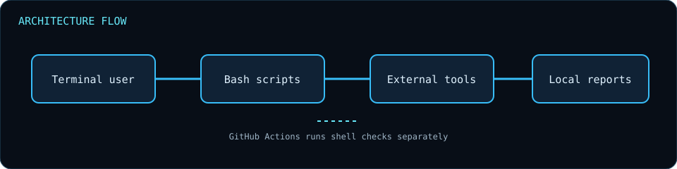
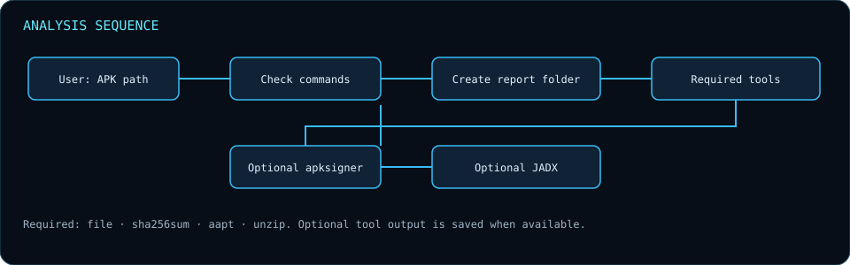

Early prototype. Static evidence collection only — not a malware verdict or proof that an app is safe.
What is SYJ-RE-Workstation?
SYJ-RE-Workstation is an early-stage, Bash-based toolkit scaffold for collecting static evidence from Android APK files. It records file identity and SHA-256, package metadata, permissions, manifest structure and archive inventory, with optional signature verification and JADX output when those tools are installed. It runs in Debian-compatible Linux environments, including Debian PRoot launched from Termux. It does not execute APKs or provide a malware verdict.
At a glance
Project
SYJ-RE-Workstation
Primary language
Bash
License
MIT
Status
Early prototype
Owner
SHalimoosavi
Organization
SAYANJALI NEXUS PRIVATE LIMITED
Environments
Debian and compatible Linux; Debian PRoot on Android through Termux
Required tools
Bash, file, sha256sum, unzip and AAPT
Quick Start
These commands clone the project in Termux. Complete Debian and AAPT setup on the installation page before analysis.
Local reports, raw-evidence summary and sanitized tool-version record
Report comparison helper
Termux and Debian bootstrap scripts
Planned — not shipped
Dedicated ELF/native binary inspection
Automated APKTool integration
Dynamic instrumentation and runtime analysis
Additional report formats and analysis modules
Broader device and architecture validation
Compatibility evidence
Main-branch compatibility matrix run #94 passed on commit f9f58af. CI covers GitHub-hosted Debian/Ubuntu amd64 containers only, not physical Android devices, Termux itself or Debian PRoot on Android.
Environment
Result
Debian 12 Bookworm
Passed
Debian 13 Trixie
Passed
Ubuntu 22.04 Jammy
Passed
Ubuntu 24.04 Noble
Passed
Architecture diagrams
The following static SVGs describe the repository workflow. They are pre-rendered assets; no client-side Mermaid renderer is loaded.

Architecture flow — Bash orchestration around external inspection tools, with local report output and separate shell checks.

Analysis sequence — required tools run first; apksigner and JADX are conditional optional integrations.
Example output
The repository includes a real report generated by the compatibility workflow from a disposable APK fixture built inside CI. It contains AAPT metadata, archive inventory, SHA-256 and an unsigned signature result. JADX was not installed in that fixture job, so decompilation was skipped. This is static output, not a safety assessment.
package: name='org.syj.reworkstation.fixture' versionCode='' versionName='' platformBuildVersionName='13.0.0' platformBuildVersionCode='33' compileSdkVersion='33' compileSdkVersionCodename='13.0.0'
sdkVersion:'21'
targetSdkVersion:'28'
package: org.syj.reworkstation.fixture
SHA-256: df27d4f8d03eda18808130a23632d85ea0f5a8733a2ecd5580e8f58a20f51220
DOES NOT VERIFY
ERROR: Missing META-INF/MANIFEST.MF
jadx not installed; decompilation skipped.
Responsible use: Analyze only APKs you own or have explicit permission to assess. Respect applicable law, contracts, platform terms and intellectual-property rights. Static output is evidence to interpret, not a security certification.
Developer
Syed Ali Hasan Moosavi is the Founder & Managing Director of SAYANJALI NEXUS PRIVATE LIMITED. I build software across AI products, blockchain infrastructure, enterprise tools, security and open-source developer utilities.